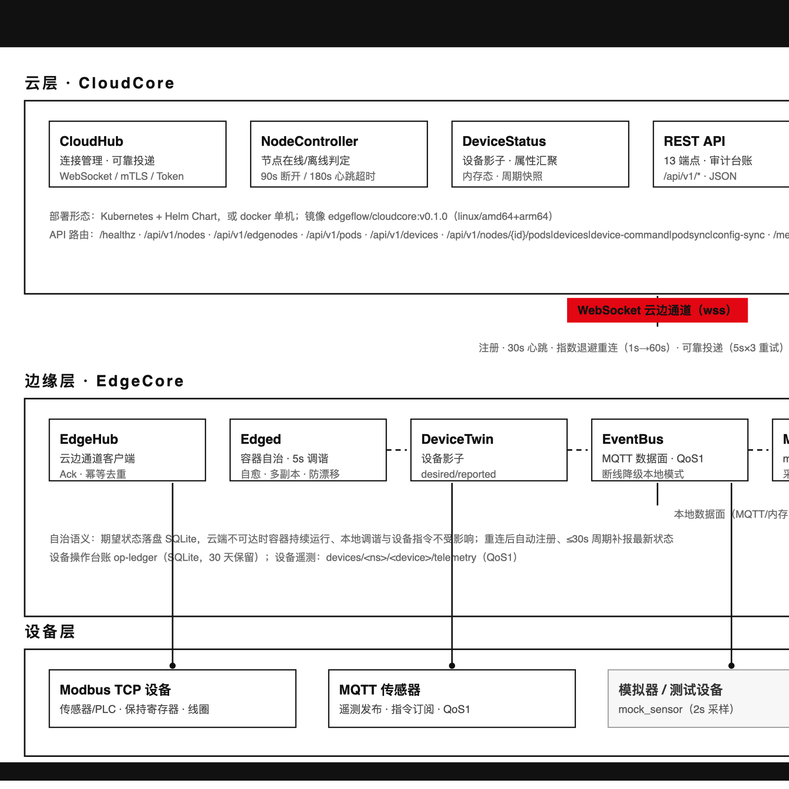
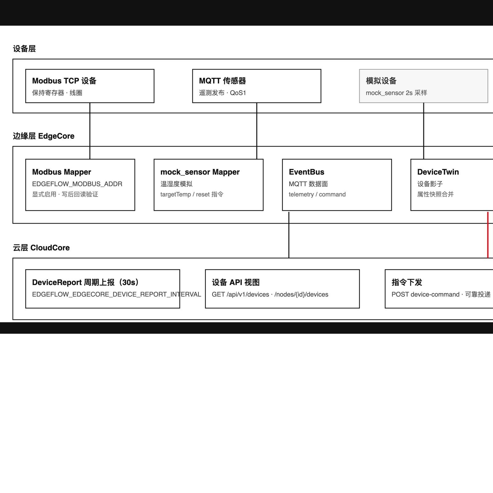
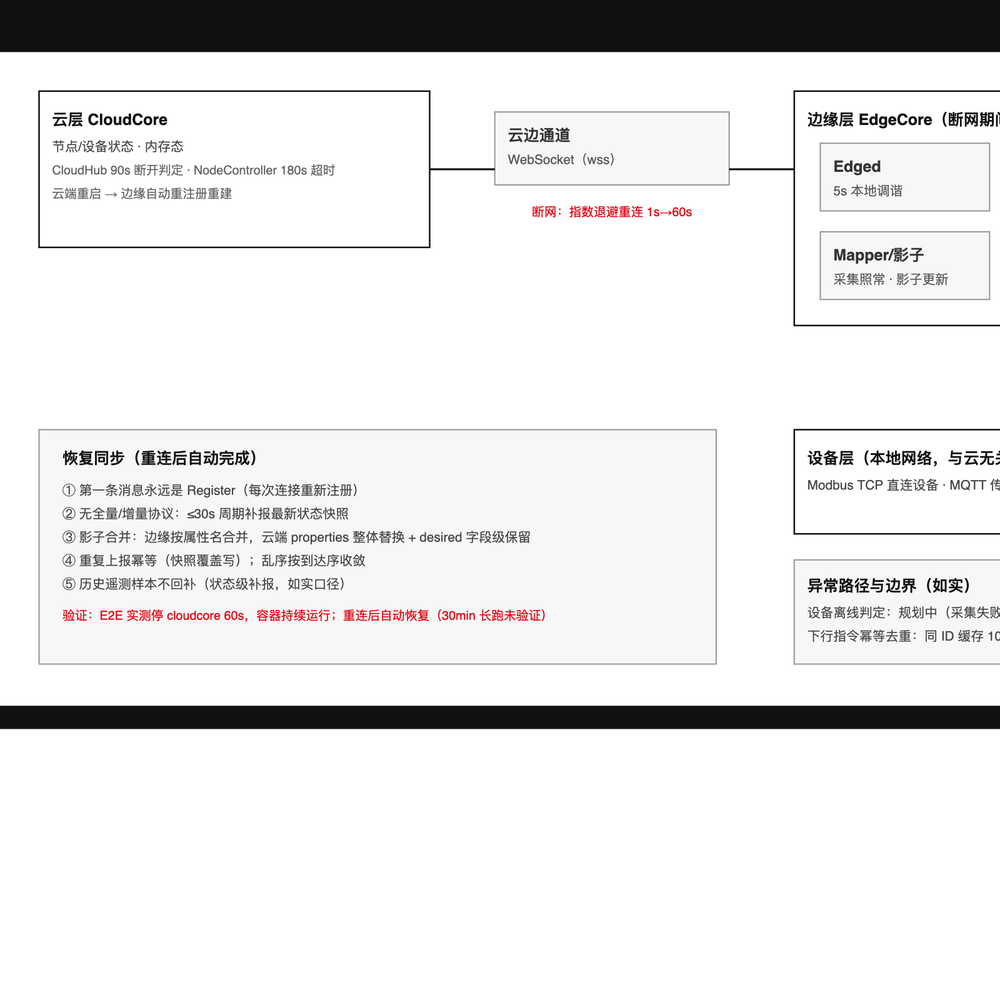
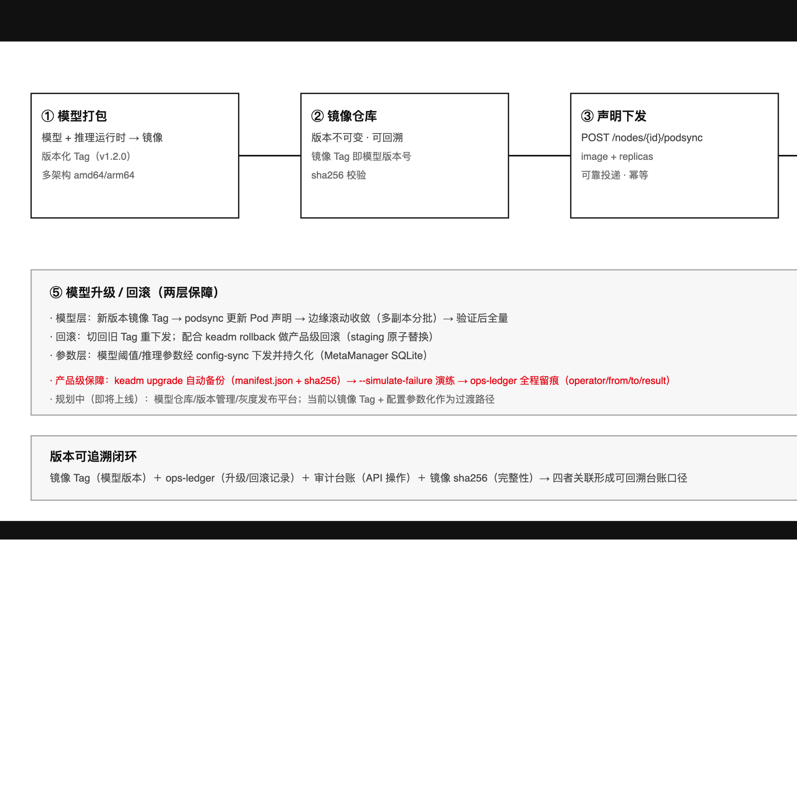
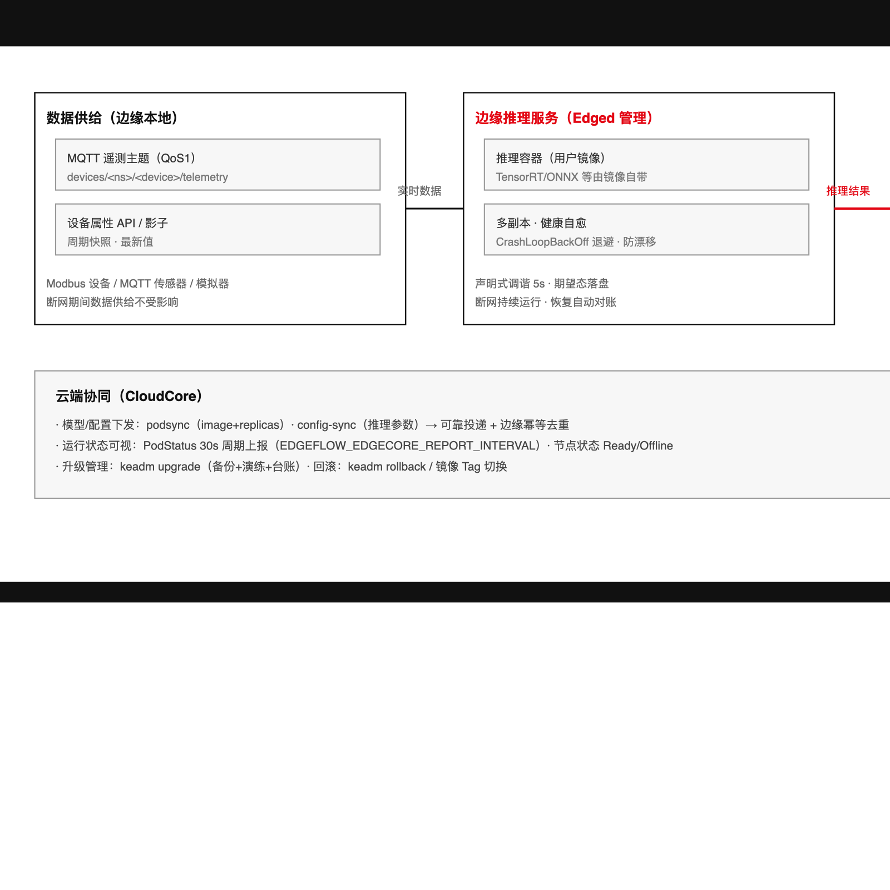
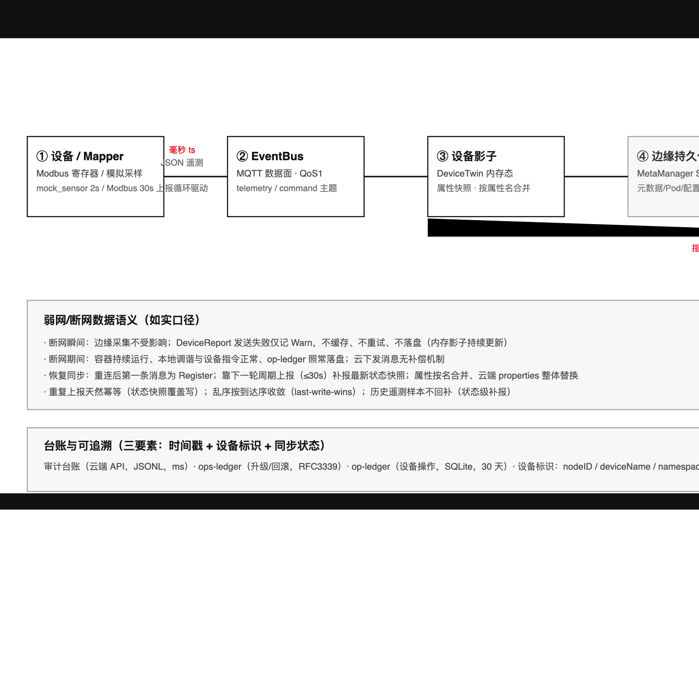

四场景：物联网数据采集 · 弱网自治 · 模型管理 · 模型应用
| 项 | 内容 |
|---|---|
| 产品版本基线 | EdgeFlow v0.1.0（2026-08-14 发布） |
| 手册版本 | v1.0.0 |
| 密级 | 公开（售前/客户技术交流） |
| 适用范围 | 售前方案设计、客户技术决策、PoC 部署参考 |
声明：本手册所有能力、参数与数字均以 EdgeFlow v0.1.0（2026-08-14 发布）已核验实现为准；规划中/尚未实现的能力一律明确标注”规划中/即将上线”，不构成交付承诺。文中命令与字段均为示意用法，具体语法以产品文档为准。
| 版本 | 日期 | 修订人 | 说明 |
|---|---|---|---|
| v1.0.0 | 2026-08-14 | 方案与产品团队 | 首版定稿：四场景 × 五部分结构、数据链路与台账口径、特性-场景映射表 |
EdgeFlow 是什么
EdgeFlow 是使用 Go 语言实现的云边端协同物联网平台，覆盖设备接入、边缘计算与云端统一管控场景，由云端与边缘两层软件栈构成：
解决什么问题
价值主张（结果性描述，不承诺 SLA 与收益数字）

EdgeFlow 采用”设备层—边缘层—云层”三层架构，文字版说明如下：
设备层：包括 Modbus TCP 设备、MQTT 传感器，以及用于演示与联调的模拟器 mock_sensor（内存波动模拟遥测，2s 周期）。
边缘层（EdgeCore），六个组件协作：
云层（CloudCore），可部署于 Kubernetes（Helm Chart）或 Docker：
表 1-1：四场景 × 特性组能力对照（v0.1.0 已实现 vs 规划中）
| 场景 | 特性组 | v0.1.0 已实现 | 规划中/即将上线 |
|---|---|---|---|
| 数据采集 | F21–F30 | MQTT/Modbus 设备接入；Mapper 周期采集（Modbus 30s 上报循环 / mock_sensor 2s）；EventBus MQTT 数据面（QoS1）；设备影子与属性快照；设备命令下行（可靠投递 F05）；DeviceReport 周期上报（30s，可配） | OPC-UA 协议接入；设备认证 |
| 弱网自治 | F11–F20 | WebSocket 云边通道与退避重连；声明式调谐（5s）；多副本；健康自愈；CrashLoopBackOff；镜像漂移检测；MetaManager SQLite（WAL）持久化 | Flannel 网络；通道压缩/Protobuf 编码 |
| 模型管理 | F36–F39 | 镜像/配置下发通道（podsync/config-sync）；生产部署与升级回滚机制 | 模型仓库与版本管理；灰度发布 |
| 模型应用 | F11–F19 | 容器应用部署与自治：多副本、健康自愈、CrashLoopBackOff、镜像漂移检测 | 灰度发布；调度/超卖 |
注：特性编号沿用产品特性基线；同一编号区间在不同场景视图下以该场景语义为准。
版本信息：EdgeFlow v0.1.0，发布日期 2026-08-14。
制品清单（表 1-2）
| 类别 | 制品 |
|---|---|
| 容器镜像 | edgeflow/cloudcore:v0.1.0、edgeflow/edgecore:v0.1.0（linux/amd64 + arm64 多架构） |
| 部署工具 | keadm（init/join/ops-ledger）、Helm Chart（云端）、Docker（双端运行） |
| 接口能力 | REST API 13 端点；运行指标 5 项 |
v0.1.0 功能范围（已实现）：WebSocket 云边通道；边缘容器自治（声明式调谐 5s、多副本、健康自愈、CrashLoopBackOff、镜像漂移检测）；设备管理（MQTT/Modbus 接入、设备影子、设备命令）；生产加固（mTLS/Token/审计台账/keadm/Helm/多架构镜像）。
规划中/即将上线：模型仓库与版本管理、灰度发布、完整 RBAC（当前为单 Token 鉴权）、设备认证、调度/超卖、Flannel 网络、OPC-UA 接入、通道压缩/Protobuf 编码、镜像安全扫描。
工业与园区场景中，数据采集是数字化底座的第一公里。本章基于 EdgeFlow v0.1.0 已实现能力，阐述以边缘就近采集为核心的方案设计、特性引用、部署方式与客户价值。
以下痛点基于工业/园区场景的通用行业实践（不涉及具体客户）：
EdgeFlow 采用”边缘就近采集、数据面与管理面分离、影子汇聚、周期上报”的架构：
| 场景需求 | 特性 | 能力说明 | 部署要点 |
|---|---|---|---|
| 协议异构设备统一接入 | F24 | DeviceMapper 接口 + MapperRegistry 负责 Mapper 的路由与生命周期 | 按协议实现 Mapper 并在 edgecore 启动时挂载 |
| 温湿度类设备接入与演示 | F25 | mock_sensor 模拟温湿度，2s 波动；支持 targetTemp/reset 指令，收敛+随机扰动 | 联调/演示开箱即用，无需实体设备 |
| Modbus 设备接入 | F26 | Modbus TCP Mapper：读写保持寄存器/线圈，写后回读验证，错误落 op-ledger | 显式 opt-in：须设置 EDGEFLOW_MODBUS_ADDR 才注册 |
| 遥测与指令数据面 | F28 | MQTT 遥测/指令主题，QoS1（至少一次、不保证去重，消费方需幂等）；paho 自动重连+订阅恢复 | 配置 MQTT broker；数据面独立于云边管理面 |
| 数据面容错 | F29 | broker 不可用自动降级纯本地模式，进程不退出 | 降级后恢复需重启 edgecore |
| 设备影子 | F21 | desired/reported 合并、深拷贝、自动创建 | 无需预建，首次上报自动创建 |
| 属性周期上报 | F22 | 默认 30s 上报一轮，启动即报 | 可用 EDGEFLOW_EDGECORE_DEVICE_REPORT_INTERVAL 调整（1s–10min） |
| 操作台账 | F27 | op-ledger 设备操作流水（SQLite 追加，30 天保留）：采集/下发方向、结果与错误 | 采集与指令操作自动落台账，Modbus 错误 result=error |
| 指令可靠闭环 | F23 | POST /api/v1/nodes/{nodeID}/device-command：可靠投递（5s 超时、最多 3 次尝试、同 ID 重发、幂等去重）→ Mapper 直接执行 → 写 Desired | 依赖云边通道可靠投递（F01/F05）承载 |
| 设备视图查询 | F30 | GET /api/v1/devices、GET /api/v1/nodes/{nodeID}/devices | 用于验证设备接入与属性可见性 |
注：本表收录 F21–F30 中经事实基线核验的条目；F01/F05 为指令链路所依赖的云边通道能力。
边界说明（如实口径）：

以”边缘节点 + Modbus 设备（或 mock_sensor 模拟）“为例：
EDGEFLOW_MODBUS_ADDR 显式启用 Modbus TCP
Mapper（F26，不设置则不注册）。EDGEFLOW_EDGECORE_DEVICE_REPORT_INTERVAL（1s–10min，默认
30s；启动即报一轮，F22）。GET /api/v1/devices
查看设备与属性（影子数据，F30）；GET /api/v1/nodes/{nodeID}/devices
按节点查看设备（F30）；POST /api/v1/nodes/{nodeID}/device-command 下发指令（如
mock_sensor 的 targetTemp），验证可靠投递（5s×3 同 ID
重发、幂等去重）、Mapper 直接执行与 Desired 写回（F23）；弱网自治是 EdgeFlow 面向矿区、海上平台、偏远园区等网络不稳定环境的核心理念：断网业务不中断、恢复后自动对账。本章描述三层自治设计、特性引用、参数调优与验证演练。
三层自治设计：
业务自治——容器持续运行与自愈。 断网期间 Pod 容器持续运行：Edged 以 5s 周期本地调谐（F11），期望态持久化于 SQLite（F17）；本地设备指令（MQTT command 主题）照常下发；影子持续更新，op-ledger 照常落 SQLite；Pod/Config 期望态边缘持久，不依赖云端补发。
数据自治——状态快照 + 周期补报（如实口径）。 断网期间采集完全不受影响（2s 采样循环与网络无关，Modbus 本地直连照常）；DeviceReport 发送失败仅记 Warn，不缓存、不重试、不落盘，内存影子持续更新。恢复后无全量/增量同步协议，靠下一轮周期上报（≤30s）补报最新状态快照——即”状态级断点续传”，不支持历史遥测样本回补（断网期间样本不落盘）。业务需要历史留存时，应在 EventBus 侧或应用侧自行订阅持久化。
通道自治——退避重连 + 可靠投递 + 幂等。 云边通道断线后指数退避重连（1s 起步、翻倍、封顶 60s，注册成功重置，F04）；下发消息可靠投递（pending+Ack、同 ID 重发、最多 3 次尝试、超时 504，F05）；边缘侧幂等去重（同 ID 缓存 1000 条 FIFO，F05），重发不重复执行；重连后第一条消息永远是 Register（每次连接重新注册，F02），随后周期上报自动重建云端视图。
| 弱网环节 | 特性 | 能力说明 | 弱网价值 |
|---|---|---|---|
| 云边通道 | F01 | WebSocket 云边管理面通道（TLS 开启自动升级 wss） | 一条连接承载全部控制与状态消息 |
| 节点注册 | F02 | 连接建立后首条消息 Register，RegisterAck 超时 10s | 重连即重新注册，身份自动恢复 |
| 心跳保活 | F03 | 30s 周期心跳 | 通道活性探测，支撑离线判定 |
| 退避重连 | F04 | 断线后 1s 起步翻倍、封顶 60s、注册成功重置 | 避免重连风暴，弱网抖动自动恢复 |
| 可靠投递 | F05 | pending+Ack、同 ID 重试 5s×3、幂等去重 1000 条、超时 504 | 下发指令不丢不重，弱网可靠闭环 |
| 节点在线/离线判定 | F07 | CloudHub 90s 断开 + NodeController 180s 心跳停滞（扫描 30s）双路径 | 离线判定不悬挂，状态最终收敛 |
| 节点状态语义 | F08 | Ready/Unknown/Offline 三态 | 状态标准化，与 K8s 语义对齐 |
| 云端状态自愈 | F09 | 云端内存态，边缘重连自动重注册恢复 | 云端重启无需人工恢复 |
| 声明式调谐 | F11 | 5s 周期本地对账，期望态在 SQLite | 断网期间容器持续收敛，业务不中断 |
| 多副本 | F12 | replicas 补齐/收缩 | 单副本异常自动补齐 |
| 健康自愈 | F13 | Inspect 非 Running 自动重启 | 容器异常自动恢复，无需人工 |
| CrashLoopBackOff | F14 | 3 次阈值/30s 退避/60s 稳定重置 | 崩溃循环自动退避，保护节点资源 |
| 镜像漂移检测 | F15 | 期望镜像比对、漂移重建（批 1 滚动） | 镜像被篡改自动还原，防漂移 |
| 断网自治 | F16 | 云端不可达容器持续运行，恢复自动同步 | 断网业务不中断（E2E 60s 实测） |
| MetaManager 持久化 | F17 | SQLite（WAL）落盘元数据/Pod/配置 | 期望态不丢，重启按声明收敛 |
| PodStatus 上报 | F18 | 30s 周期（可配 1s–10min），Absent 终态保留 90s | 云端实时掌握 Pod 运行状态 |
| 增量订阅通知 | F20 | MetaManager 本地变更订阅通知 | 边缘模块解耦联动 |

弱网参数调优（env）：
| 参数 | 默认 | 说明 |
|---|---|---|
| 云边心跳周期 | 30s | 通道活性探测间隔（F03） |
| 退避重连上限 | 60s | 断线重连指数退避封顶（F04） |
| EDGEFLOW_EDGECORE_DEVICE_REPORT_INTERVAL | 30s（1s–10min） | 设备状态上报周期，弱网可调大降低流量（F22） |
| EDGEFLOW_EDGECORE_REPORT_INTERVAL | 30s（1s–10min） | Pod 状态上报周期（F18） |
| EDGEFLOW_CLOUDCORE_NODE_SCAN_INTERVAL / NODE_TIMEOUT | 30s / 180s | 节点心跳扫描周期与超时（F07） |
验证演练（参考 E2E 实测）：
| 场景 | 产品行为 | 恢复机制 | 边界说明 |
|---|---|---|---|
| 设备离线 | 无设备级离线判定；采集失败仅 Warn，本轮按旧值上报；Modbus 错误落 op-ledger（result=error） | 无（仅台账可查错误历史） | 设备级离线检测规划中/即将上线 |
| 数据乱序 | 无序号，按到达序 last-write-wins 收敛（云端不比较时间戳） | WS 单连接 TCP 保序，跨重连乱序窗口极小 | 最终一致，状态快照语义天然收敛 |
| 重复上报 | 状态快照覆盖写，天然幂等 | — | 无 Ack 设计下重复投递无副作用 |
| 历史数据回补 | 不支持：断网期间样本不落盘，重连仅补报最新状态快照 | 状态级补报（≤30s） | 历史留存需 EventBus/应用侧自行持久化 |
| 云端重启 | 云端内存态清空；边缘读超时约 90s → 退避重连 → 自动重注册 → 周期上报重建 | 自动，无需人工（E2E 实测） | 云端无持久化恢复，依赖边缘重建 |
| 30min 长跑 | 断网自治 E2E 仅 60s 短时验证 | — | E2E 层 30min 长跑未验证（POC 层曾验证断网 30min 容器持续运行）；大规模弱网场景建议现场压测 |
| 云下发补偿 | 断网期间云下发消息（PodSync/DeviceCommand）收不到，无补偿机制 | 重连后靠周期上报/重新下发 | 关键指令建议恢复后主动重发（可靠投递兜底） |
本章范围声明：EdgeFlow v0.1.0 当前未内置模型仓库（模型注册/存储）、模型版本管理、模型灰度发布与训练平台，模型以”容器镜像 + 配置”为载体分发。上述平台化能力处于规划中/即将上线（产品 ROADMAP 已规划灰度发布等能力）。本章方案为基于现有能力的过渡路径，全部引用能力均来自事实基线，平台能力上线后可平滑演进，不虚构任何未实现能力。
设计定位：在模型管理平台（注册、版本、灰度）规划中/即将上线的前提下，利用 EdgeFlow 现成的”边缘容器管理 + 云端下发通道 + 配置同步 + 生产级升级回滚”能力，构建一套可落地的模型分发、升级、回滚与追踪链路。
模型分发链路（过渡方案，8 步）：
model-x:v1.2.0），实现”镜像即模型、Tag 即版本”。POST /api/v1/nodes/{nodeID}/podsync 下发 Pod
声明，指定镜像版本与副本数（F31）；下发链路具备可靠投递保障（F05）。POST /api/v1/nodes/{nodeID}/config-sync 下发（F31），由边缘
MetaManager SQLite
持久化期望态（F17），节点重启后配置不丢失，实现”模型与参数解耦、参数可调”。灰度发布规划路径：
| 环节 | F 编号 | 产品能力 | 说明 |
|---|---|---|---|
| 声明下发 | F31 | 云端 API 下发通道 | POST /api/v1/nodes/{nodeID}/podsync 下发 Pod
声明（镜像版本+副本数）、POST /api/v1/nodes/{nodeID}/config-sync
下发模型参数/阈值；为云端 13 个 HTTP 端点之一 |
| 可靠投递 | F05 | 下发通道可靠投递 | 保证 Pod 声明与配置下发不丢失，支撑升级/回滚指令可靠到达 |
| 期望态持久化 | F17 | 边缘 MetaManager SQLite 持久化 | 期望态（含模型参数配置）落盘，节点重启后仍按声明收敛 |
| 声明式调谐 | F11 | 声明式调谐（5s 周期） | 模型版本、副本数变更后边缘自动收敛至期望状态 |
| 多副本管理 | F12 | 多副本补齐/收缩 | 模型服务多副本部署，升级分批滚动、异常自动补齐 |
| 健康自愈 | F13 | 健康自愈自动重启 | 模型实例异常自动重启恢复，减少人工介入 |
| 异常退避 | F14 | CrashLoopBackOff（3 次/30s 退避/60s 稳定重置） | 模型加载失败等场景下避免无限重启、保护节点 |
| 镜像漂移防护 | F15 | 镜像漂移检测自动重建 | 模型镜像被篡改/漂移时自动重建，保障模型完整性与可信 |
| 生产部署 | F36 / F37 | keadm 部署 / Helm 部署 | 边缘节点批量部署与集群化安装，支撑模型服务规模化落地 |
| 多架构支持 | F38 | amd64 + arm64 多架构镜像 | 同一模型镜像覆盖异构边缘设备 |
| 升级回滚 | F39 | 产品级升级回滚机制 | 备份 manifest.json+sha256、--simulate-failure
演练、KEADM_OPERATOR 审计、staging 原子替换、ops-ledger 留痕 |
| 模型仓库/版本管理/灰度 | — | 模型管理平台（注册、版本、灰度） | 规划中/即将上线，v0.1.0 不提供；本章以”镜像 Tag + config-sync + ops-ledger 台账”为过渡替代路径 |
⚠️ 明确标注：模型仓库（模型注册/存储）、模型版本管理、模型灰度发布、训练平台——规划中/即将上线，当前版本不提供。4.2 方案为基于现有能力的过渡路径，相关平台能力上线后可直接演进，不构成对未发布功能的承诺。

（1）构建并推送模型镜像（示意命令，通用行业实践）：
docker build -t registry.example.com/edgeflow/models/defect-detector:v1.2.0 .
docker push registry.example.com/edgeflow/models/defect-detector:v1.2.0（2）下发模型服务声明（podsync，字段示意；完整声明格式以产品文档为准）：
POST /api/v1/nodes/{nodeID}/podsync
image: registry.example.com/edgeflow/models/defect-detector:v1.2.0
replicas: 2（3）下发模型参数配置（config-sync，字段示意）：
POST /api/v1/nodes/{nodeID}/config-sync
# 模型阈值/参数（如告警阈值、推理超参），由边缘 SQLite 持久化（F17）（4）部署验证：查询节点状态与副本就绪情况；声明下发后 Edged 在 5s 调谐周期内收敛（F11）。
（5）升级（版本更新）：构建并推送新版本镜像（如
v1.3.0）→ 更新 Pod 声明镜像 Tag →
多副本分批滚动替换（F12）；产品级升级通过 keadm 执行，升级前可用
--simulate-failure 演练验证（F39）：
# 示意命令，以产品文档为准
keadm upgrade --version <目标版本> --simulate-failure # 升级演练
keadm upgrade --version <目标版本> # 正式升级（6）回滚：
v1.2.0）重新下发，边缘自动收敛回旧版本；keadm rollback
恢复至升级前状态（备份 manifest.json+sha256、staging
原子替换，F39）；以上命令与字段均为示意用法，具体语法以产品文档为准。
--simulate-failure 演练 +
KEADM_OPERATOR 审计 + ops-ledger
留痕，升级过程全程可审计，满足运维与合规追溯要求。本章范围声明：本章描述推理服务在边缘侧容器化部署与运行的能力边界。推理框架由用户镜像自带，产品不内置；GPU/异构加速未验证。典型场景仅作通用示意，不承诺推理效果。
总体思路：将推理服务以容器化形式部署于边缘节点，与数据源同侧运行（近数据侧推理），构建”数据供给 → 推理消费 → 结果闭环”的本地推理链路；模型由第 4 章模型管理流程（镜像 + 配置）分发。
组件与数据流：
devices/<ns>/<device>/telemetry（QoS1）供推理服务本地订阅（F28）；设备属性经属性
API 读取（F30）。能力边界（如实标注）：
典型场景示意（通用示意，不承诺效果）：设备预测性维护（基于工况遥测的异常检测与告警）、质量检测（图像/信号分类）。
| 环节 | F 编号 | 产品能力 | 说明 |
|---|---|---|---|
| 容器生命周期管理 | F11 | 声明式调谐（5s 周期） | 推理实例按声明持续收敛，声明即运行态 |
| F12 | 多副本补齐/收缩 | 推理服务多副本部署，单点故障自动补齐，可用性保障 | |
| F13 | 健康自愈自动重启 | 推理实例异常自动重启，保证持续服务 | |
| F14 | CrashLoopBackOff（3 次/30s 退避/60s 稳定重置） | 坏配置/坏镜像导致的连续失败进入退避，避免重启风暴 | |
| F15 | 镜像漂移检测自动重建 | 推理镜像被篡改/漂移时自动重建，防篡改 | |
| F16 | 断网自治容器持续运行 | 弱网/断网时推理容器持续运行，服务不中断 | |
| 数据供给 | F28 | MQTT 遥测主题（QoS1） | 设备遥测数据本地订阅消费，作为推理输入 |
| F30 | 设备属性 API | 读取设备属性，补充推理输入 | |
| 结果闭环 | F21 / F22 | 影子与属性上报 | 推理结果/状态经影子汇聚与周期上报回写云端 |
| F23 | 设备命令闭环 | 推理结果触发设备命令/动作，形成闭环 | |
| 期望态持久化 | F17 | 边缘 MetaManager SQLite 持久化 | 数据订阅配置与期望态落盘，重启后不丢失 |

（1）推理服务声明（YAML 风格，字段示意；完整声明格式以产品文档为准）：
# 推理服务声明（示意）
image: registry.example.com/edgeflow/models/defect-detector:v1.2.0
replicas: 2
# 由 POST /api/v1/nodes/{nodeID}/podsync 下发（F31）（2）推理参数配置：经 config-sync 下发（如告警阈值、推理超参），边缘 SQLite 持久化（F17）。
（3）数据订阅配置：推理容器订阅
devices/<ns>/<device>/telemetry（QoS1，F28）消费实时遥测；需要历史/聚合输入时经属性
API 读取（F30）。
（4）多副本与自愈验证：
（5）结果闭环验证：推理结果触发
POST /api/v1/nodes/{nodeID}/device-command
下发设备动作（F23），或经属性上报在 GET /api/v1/devices
可见（F30）。

表 6-1：遥测数据上行 7 跳链路
| 跳次 | 环节 | 数据内容 | 通道/协议 | 关键参数 |
|---|---|---|---|---|
| 1 | 设备 → Mapper | 原始遥测 | Modbus TCP（读保持寄存器）/ mock_sensor 内存波动 | Modbus 由 30s 上报循环驱动；mock_sensor 2s 波动 |
| 2 | Mapper → EventBus | JSON 遥测 {temperature, humidity, ts(毫秒)} | MQTT QoS1；主题 devices/ |
QoS1 至少一次投递 |
| 3 | Mapper → 设备影子 | 属性快照 | DeviceTwin 内存态写入 | 影子仅维护最新快照 |
| 4 | 影子 → 边缘存储 | 节点元数据、Pod 期望状态、配置 | MetaManager SQLite（WAL） | 影子本身不落盘 |
| 5 | 影子 → 云端 DeviceReport | 设备状态报告 | WebSocket JSON，无 Ack 单向流式 | 30s 周期；EDGEFLOW_EDGECORE_DEVICE_REPORT_INTERVAL 可配（1s–10min）；启动即报一轮 |
| 6 | 云端接收 → 存储 | DeviceStatus 快照 | CloudCore 内存态 | nodeID → namespace/deviceName → 状态 |
| 7 | 云端存储 → API | 设备状态查询 | REST API | GET /api/v1/devices；GET /api/v1/nodes/{nodeID}/devices |
指令下行链路：POST /api/v1/nodes/{nodeID}/device-command → 可靠投递（5s 超时、最多 3 次尝试、同一命令 ID 重发、边缘幂等去重 1000 条，F05）→ Mapper 执行 → 写入 Twin.Desired → 云端合并状态。
EdgeFlow v0.1.0 的弱网数据语义为“最新状态快照周期补报”，如实说明如下：
表 6-2：三类台账
| 台账 | 记录内容 | 存储位置 | 格式与保留 | 关键字段 |
|---|---|---|---|---|
| 审计台账 | 云端 API 操作（含 401 拒绝） | 默认 data/audit-ledger.jsonl（env EDGEFLOW_CLOUDCORE_AUDIT_PATH 可配） | JSONL 追加；文件 0600 / 目录 0700 | ts(毫秒) / action / path / method / status / operator(默认 anonymous) / ip |
| ops-ledger | keadm 升级/回滚操作 | output-dir/ops-ledger.jsonl | JSONL 追加；keadm ops-ledger 查询最近 N 条（默认 20） | ts(RFC3339) / action(upgrade|rollback) / from / to / result(ok|failed) / operator(KEADM_OPERATOR，缺省 unknown) / note(备份 id、失败原因) |
| op-ledger | 设备操作流水（采集/下发） | SQLite 追加流水 | 30 天保留 | id 自增 / ts 毫秒 / deviceId / direction(up 采集、down 下发) / regAddr / value / result(ok|error) / message |
时间戳与设备标识口径（表 6-3）
| 口径项 | 约定 |
|---|---|
| 时间戳 | 审计台账与 op-ledger 采用毫秒；ops-ledger 采用 RFC3339 |
| 节点标识 | nodeID，默认 edge-<主机名> |
| 设备标识 | deviceName（如 sensor-01、mb-sensor-01） |
| 命名空间 | namespace，默认 default |
跨台账关联时须按上述统一口径对齐，避免口径混用导致追溯断链。
可追溯性由三个要素构成，任一可追溯记录须同时满足：
三类台账协同形成可追踪闭环：审计台账覆盖云端 API 操作（含 401 拒绝记录），ops-ledger 覆盖系统升级/回滚变更（含备份 id 与失败原因），op-ledger 覆盖设备级采集/下发流水（30 天保留）。结合 6.3 的统一口径，可对”谁在什么时间、通过什么操作、影响了哪台设备、结果如何”进行完整追溯。
以下问答全部基于 EdgeFlow v0.1.0（2026-08-14 发布）已核验实现作答；涉及规划中能力均明确标注。
A1. 云边断网期间，采集到的数据会丢吗？
断网期间边缘本地采集不受影响：设备 → Mapper → 设备影子的链路完全在边缘本地完成，影子始终保留最新状态快照。但平台不保留历史遥测样本，断网期间产生的中间样本不会回补，重连后通过周期上报（默认 30s，可配 1s–10min）补报最新状态快照。如业务需要完整历史序列，需在 EventBus 侧或应用侧自行订阅持久化（v0.1.0 未内置遥测历史存储）。
A2. 弱网下发给设备的指令会丢吗？
不会静默丢失。下行指令走可靠投递：应用层 Ack 确认、同一命令 ID 自动重试（5s 超时 × 最多 3 次）、边缘侧幂等去重（缓存 1000 条 FIFO），通道恢复后重发指令仍可正确投递且不重复执行；超时最终返回 504 便于调用方感知。
A3. 数据是否可追溯？
可追溯。三类台账覆盖全链路：审计台账（云端 API 操作，含 401 拒绝记录，JSONL）、ops-ledger（keadm 升级/回滚，含备份 id 与失败原因）、op-ledger（设备级采集/下发流水，SQLite，30 天保留）。统一口径：时间戳（毫秒/RFC3339）+ 设备标识（nodeID/deviceName/namespace）+ 同步状态（result/status）。
A4. 支持哪些设备协议？
v0.1.0 支持 MQTT（QoS1，遥测/指令主题）与 Modbus TCP（显式设置 EDGEFLOW_MODBUS_ADDR 启用，读写保持寄存器/线圈，写后回读验证）；另提供 mock_sensor 模拟器用于演示联调。OPC-UA 接入规划中/即将上线。
A5. 能管理多少边缘节点？
支持多节点统一纳管。性能基线上 10 节点并发注册实测 100% 成功（平均 201.3ms）；更大规模请以实际环境压测为准。
A6. 平台安全机制有哪些？
生产加固四项：mTLS 云边通道（启用后自动升级 wss）、接入 Token 鉴权（默认关闭、开启后 401 fail-fast）、审计台账（文件 0600/目录 0700，认证失败也记录）、镜像多架构与 keadm 升级备份校验。完整 RBAC（当前为单 Token 鉴权）与镜像安全扫描规划中/即将上线。
A7. 模型如何部署到边缘？
v0.1.0 以”容器镜像 + 配置”为载体：模型与推理运行时打包为版本化镜像 → podsync 下发 Pod 声明（image + replicas）→ 边缘 Edged 拉取运行并持续自治（多副本/健康自愈/防漂移）；推理参数经 config-sync 下发并落盘。模型仓库/版本管理/灰度发布平台规划中/即将上线，当前以镜像 Tag + 配置参数化作为过渡路径。
A8. 升级和回滚有保障吗？
有。keadm upgrade 自动备份（manifest.json + sha256 校验）→ staging
原子替换 → 支持 –simulate-failure 演练；失败后执行
keadm rollback --latest 可恢复，全程 ops-ledger
留痕（operator/from/to/result/note）。配合镜像 Tag
切换可完成应用级升级与回滚。
A9. 边缘重启或云端重启会怎样？
边缘重启：期望状态（节点元数据/Pod/配置）已落盘 MetaManager SQLite（WAL），启动后自动恢复并按声明调谐。云端重启：云端状态为内存态，边缘感知断线（读超时约 90s）后退避重连并自动重新注册（首条消息为 Register），随后周期上报自动重建节点/设备/Pod 状态，无需人工介入（E2E 已实测）。
A10. 设备离线如何感知？
v0.1.0 提供节点级离线判定（CloudHub 90s 无消息断开 + NodeController 心跳停滞 180s 双路径），状态呈现 Ready/Unknown/Offline；设备级离线检测规划中/即将上线，当前 Mapper 采集失败仅记 Warn 并落 op-ledger（result=error），可通过台账查询错误历史。
| 术语 | 定义 |
|---|---|
| CloudCore | EdgeFlow 云端组件，承担节点/设备管控、REST API、审计台账与运行指标 |
| EdgeCore | EdgeFlow 边缘组件，由 EdgeHub/Edged/DeviceTwin/EventBus/Mapper/MetaManager 组成 |
| EdgeHub | 边缘云边通道客户端，负责注册、心跳、消息收发与幂等去重 |
| Edged | 边缘容器自治引擎，按声明式调谐（默认 5s）维护容器期望状态 |
| DeviceTwin | 设备影子，维护设备属性最新快照（内存态），支撑上报与指令闭环 |
| Mapper | 设备接入框架，提供 DeviceMapper 接口与注册路由，实现协议适配（MQTT/Modbus） |
| EventBus | 边缘 MQTT 数据面，承载遥测/指令主题（QoS1），broker 缺失时降级本地模式 |
| MetaManager | 边缘元数据管理，SQLite（WAL）落盘节点/Pod/配置，提供本地持久化 |
| 设备影子 | 设备属性在平台侧的期望/实际状态视图（desired/reported） |
| 声明式调谐 | 以期望状态为基准周期对账（reconcile），持续收敛实际状态 |
| 调谐周期 | 默认 5s，Edged 每次对账的时间间隔 |
| 镜像漂移 | 容器实际镜像与期望镜像不一致，触发自动重建还原 |
| CrashLoopBackOff | 连续重启 3 次进入 30s 退避窗口，稳定运行 60s 后重置计数 |
| 指数退避重连 | 断线后 1s 起步、逐次翻倍、封顶 60s 的自动重连策略 |
| 可靠投递 | 应用层 pending+Ack 确认、同 ID 重发、最多 3 次尝试、幂等去重（1000 条） |
| 幂等 | 同一命令/消息重复投递不产生重复副作用 |
| DeviceReport | 设备状态周期上报消息（30s，可配），无 Ack 单向流式 |
| podsync | 云端向边缘下发 Pod 声明（image/replicas）的 API |
| config-sync | 云端向边缘下发配置并持久化的 API |
| 节点离线 | 云端判定：CloudHub 90s 断开或 NodeController 180s 心跳停滞 |
| 设备离线 | 设备级离线检测（规划中/即将上线）；当前仅 op-ledger 记录采集错误 |
| 台账 | 追加式审计/操作记录（审计台账/ops-ledger/op-ledger 三类） |
| JSONL | JSON Lines，每行一条 JSON 记录的追加式日志格式 |
| mTLS | 双向 TLS，云边通道启用后自动升级 wss |
| QoS1 | MQTT 服务质量级别”至少一次”，不保证去重，消费方需幂等 |
| keadm | EdgeFlow 部署工具（init/join/upgrade/rollback/ops-ledger 等） |
| ops-ledger | keadm 升级/回滚操作台账（JSONL，含备份 id 与失败原因） |
| op-ledger | 设备操作台账（SQLite 追加流水，30 天保留；代码/SQL 表名为 op_ledger） |
| 审计台账 | 云端 API 操作台账（audit-ledger.jsonl，含 401 记录） |
| 状态快照周期补报 | 弱网恢复后按周期补报最新状态快照（非历史回补） |
表 C-1：F01–F40 已实现特性 × 四场景归属（双向追溯）
| F 编号 | 特性名称 | 数据采集 | 弱网自治 | 模型管理 | 模型应用 | 手册引用章节 |
|---|---|---|---|---|---|---|
| F01 | WebSocket 云边管理面通道 | ● | ● | ○ | ○ | 1.2 / 3.3 |
| F02 | 节点注册（Register/RegisterAck，10s 超时） | ○ | ● | ○ | ○ | 3.2 / 3.3 |
| F03 | 心跳保活（30s） | ○ | ● | ○ | ○ | 3.3 / 3.4 |
| F04 | 指数退避重连（1s→60s 封顶） | ○ | ● | ○ | ○ | 3.2 / 3.3 |
| F05 | 消息可靠投递（5s×3、幂等去重 1000 条、504） | ● | ● | ● | ○ | 2.3 / 3.2 / 4.3 / 6.1 |
| F06 | 多节点并发管理（10 节点实测 100%） | ● | ○ | ○ | ○ | 附录 A5 |
| F07 | 在线/离线双路径判定（90s/180s） | ○ | ● | ○ | ○ | 3.3 / 3.6 |
| F08 | 节点状态语义（Ready/Unknown/Offline） | ○ | ● | ○ | ○ | 3.3 |
| F09 | 云端状态内存态+边缘持久（自动恢复） | ○ | ● | ○ | ○ | 3.3 / 3.6 |
| F10 | 消息路由引擎（SendToNode/Broadcast/Deliver） | ○ | ○ | ○ | ○ | 附录 C（仅登记） |
| F11 | Edged 声明式调谐（5s） | ○ | ● | ● | ● | 3.2 / 4.3 / 5.3 |
| F12 | 多副本 Pod 管理（补齐/收缩） | ○ | ● | ● | ● | 3.3 / 4.2 / 5.3 |
| F13 | 健康自愈自动重启 | ○ | ● | ● | ● | 3.3 / 4.3 / 5.3 |
| F14 | CrashLoopBackOff（3 次/30s/60s 重置） | ○ | ● | ● | ● | 3.3 / 4.3 / 5.3 |
| F15 | 镜像漂移检测与重建 | ○ | ● | ● | ● | 3.3 / 4.3 / 5.3 |
| F16 | 断网自治（E2E 60s 实测） | ○ | ● | ○ | ● | 3.3 / 3.6 / 5.3 |
| F17 | MetaManager SQLite 持久化 | ○ | ● | ● | ● | 3.3 / 4.3 / 5.3 / 6.1 |
| F18 | PodStatus 周期上报（30s 可配，Absent 90s） | ○ | ● | ○ | ○ | 3.3 / 3.4 |
| F19 | 删除收敛闭环（delete→Absent→云端收敛） | ○ | ● | ○ | ○ | 附录 C（仅登记） |
| F20 | MetaManager 增量订阅通知 | ○ | ● | ○ | ○ | 3.3 |
| F21 | DeviceTwin 影子（desired/reported 合并） | ● | ○ | ○ | ● | 2.3 / 5.3 |
| F22 | 设备属性周期上报（30s 可配，启动即报） | ● | ○ | ○ | ● | 2.3 / 5.3 / 6.1 |
| F23 | device-command 指令闭环 | ● | ○ | ○ | ● | 2.3 / 5.3 / 6.1 |
| F24 | Mapper 框架（接口+注册路由） | ● | ○ | ○ | ○ | 2.2 / 2.3 |
| F25 | mock_sensor 模拟器（2s，targetTemp/reset） | ● | ○ | ○ | ○ | 2.3 / 2.4 |
| F26 | Modbus TCP Mapper（显式启用，写后回读） | ● | ○ | ○ | ○ | 2.3 / 2.4 |
| F27 | op-ledger 操作台账（SQLite 表名 op_ledger，30 天保留） | ● | ○ | ○ | ○ | 2.3 / 2.5 / 6.3 |
| F28 | EventBus MQTT 数据面（QoS1，自动重连） | ● | ○ | ○ | ● | 2.3 / 5.3 |
| F29 | EventBus 降级本地模式 | ● | ● | ○ | ○ | 2.3 / 2.4 |
| F30 | 设备 API 云端视图 | ● | ○ | ○ | ● | 2.3 / 5.3 / 6.1 |
| F31 | REST API 13 端点（podsync/config-sync 等） | ○ | ○ | ● | ● | 4.3 / 5.4 |
| F32 | 运行指标 5 项（edgeflow_cloudcore_*） | ○ | ○ | ○ | ○ | 1.2 / 1.4 |
| F33 | Token 认证（默认 off，401 fail-fast） | ○ | ○ | ○ | ○ | 附录 A6 |
| F34 | mTLS 云边通道（wss） | ○ | ○ | ○ | ○ | 附录 A6 / 3.3 |
| F35 | 审计台账（JSONL，0600/0700） | ○ | ○ | ○ | ○ | 6.3 |
| F36 | keadm 部署（init/join/ops-ledger） | ○ | ○ | ● | ○ | 4.3 |
| F37 | Helm Chart 部署 | ○ | ○ | ● | ○ | 4.3 |
| F38 | 多架构镜像（amd64+arm64） | ○ | ○ | ● | ○ | 4.3 |
| F39 | 升级回滚机制（备份/演练/审计/留痕） | ○ | ○ | ● | ○ | 4.3 / 4.4 |
| F40 | 性能基线（10 节点 201.3ms） | ○ | ○ | ○ | ○ | 附录 A5 |
图例：● 主要支撑场景；○ 次要/间接支撑场景。手册引用章节为 v1.0.0 定稿节号。
表 C-2：规划中/范围外特性清单（F41–F48）
| 编号 | 规划项 | 状态 | 说明 |
|---|---|---|---|
| F41 | 模型仓库与版本管理平台 | 规划中/即将上线 | 当前以镜像 Tag + 配置参数化过渡（第 4 章） |
| F42 | 灰度发布 | 规划中/即将上线 | ROADMAP 已规划；过渡期人工分批（4.2） |
| F43 | 完整 RBAC（多角色权限） | 规划中 | 当前为单 Token 鉴权 |
| F44 | 设备认证（设备级身份） | 规划中 | 设备级离线检测同属规划范围 |
| F45 | 调度/超卖、Flannel 网络 | 规划中 | 集群化能力增强 |
| F46 | OPC-UA 协议接入 | 规划中 | 当前支持 MQTT/Modbus TCP |
| F47 | 通道压缩/Protobuf 编码 | 规划中 | 当前 JSON 信封 |
| F48 | 镜像安全扫描 | 规划中 | 当前提供 sha256 完整性校验（升级备份） |